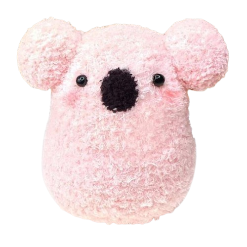

Sock plushies are small stuffed toys that are created using socks. Different parts of the sock are sewn into new shapes and stuffed. Creating these small plushes is a great way to relax. The plushes are often filled with generic pillow stuffing but they may also be filled with things such as fabric scraps and/or beans.
To create your very own sock plushy, there are 5 steps that you need to follow. These steps are...
Also, see the embedded live Tableau dashboard.There are many patterns avaliable online. Sock plushy patterns are unlike traditional sewing patterns. Often it is easiest to follow a video tutorial that explains the sewing process for the plushy you are trying to make. As you become more familiar with the sock plushy making process, you may choose to create something without a pattern. The possibilities of what you can make are endless.
Here are some easy to follow tutorials that are great for beginners.
After finding a pattern, sew the sock into the desired shapes. There are three main kinds of stitches you can use to sew your plush.
Becoming familiar with these three stitches will help you to create a polished and durable final product. Sock plushies are relatively forgiving. Even without using these three stitches or properly sewing techniquies, it is entirely possible to complete a sock plush by following your intution.
After each section of your plush has been sewn to shape, it is time to stuff your new fuzzy friend. Pillow stuffing is recommended, however there are many alternatives that you can use. My favorite alternative to pillow stuffing is beans. Beans add some weight to your plush and can be used to help the plushes stand up straight. Other alternatives include old clothes/clothing scraps, tissues, tissue paper, newspaper, plastic grocery bags, and rice.
After you have, gathered your supplies, found a pattern, sewn, and stuffed you are finally finished with your sock plushy! These plushies make great gifts for people of all ages. Or you can keep them for yourself! These little friends are perfect to brighten your day or fill your free time.
This is the live Tableau dashboard that I have embedded.